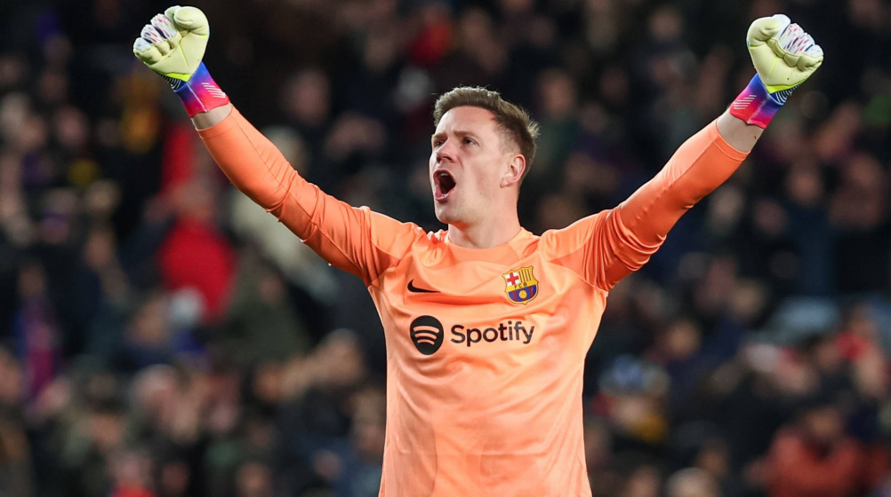
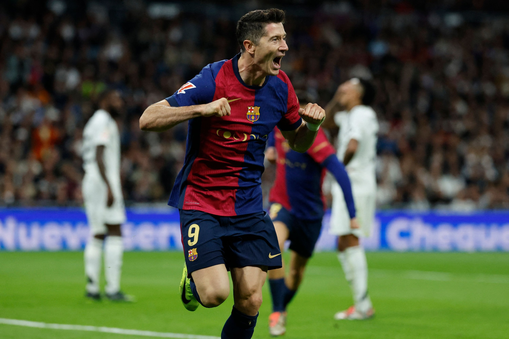
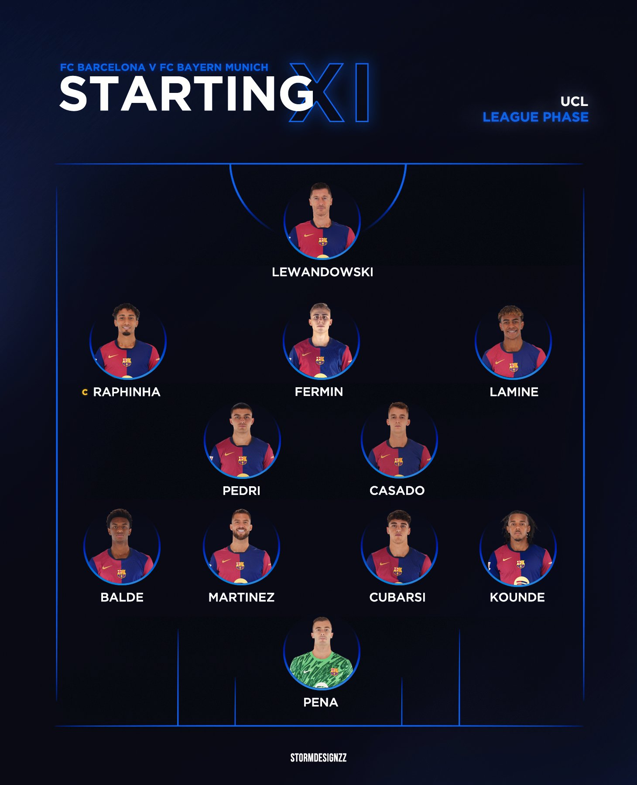

Plus d'informations sur cette Equipe :
le FC Barcelone est reconnu pour avoir l'une des équipes les plus talentueuses et influentes de l'histoire du football. Chaque saison, le club assemble un groupe de joueurs exceptionnels, mêlant jeunes talents issus de son académie, La Masia, et stars internationales. Cette combinaison unique reflète l’engagement du Barça envers un style de jeu offensif et spectaculaire, tout en respectant ses racines formatrices.

La Masia :
Le FC Barcelone est mondialement célèbre pour son académie de jeunes joueurs, La Masia. Fondée pour former des jeunes talents, elle a produit certains des meilleurs joueurs de l'histoire, tels que Lionel Messi, Xavi, Andrés Iniesta, et Sergio Busquets. L’académie continue de jouer un rôle central dans le renouvellement et la pérennité du club.
Les starts actuelles :
Marc-André ter Stegen (Gardien de but): Une des figures clés du FC Barcelone, il est connu pour ses réflexes incroyables et son calme sous pression 
Robert Lewandowski (Attaquant) : Une machine à marquer des buts, il est l’un des meilleurs attaquants au monde, apportant expérience et efficacité.

Pedri (Milieu de terrain) : Jeune prodige formé au club, il est souvent comparé aux légendes comme Xavi et Iniesta pour sa vision du jeu exceptionnelle.

Frenkie de Jong (Milieu de terrain) : Un joueur polyvalent, alliant technique et intelligence tactique, essentiel dans la construction du jeu.

Lamine Yamal (attaquant) :Lamine Yamal est devenu l’un des plus jeunes talents à émerger de La Masia, l’académie légendaire du Barça. À seulement 16 ans, il est déjà un joueur clé de l’équipe première grâce à son incroyable technique, sa vision du jeu et sa maturité impressionnante pour son âge. 
Coach (hansi Flick) :
Entraîneur du FC Barcelone depuis 2024, Hansi Flick est connu pour sa rigueur tactique et son succès au plus haut niveau. Ancien sélectionneur de l'Allemagne et vainqueur de la Ligue des champions avec le Bayern Munich, il apporte une expérience inestimable et un style de jeu offensif, adapté aux valeurs du Barça. Sous sa direction, l’équipe aspire à retrouver les sommets du football européen.
lineup actuelle 2024-2025 sous Flick :
Au cours de la saison 2024-2025, sous la direction de Hansi Flick, le FC Barcelone a aligné une équipe équilibrée mêlant expérience et jeunesse. Lors de matchs importants comme El Clásico contre le Real Madrid ou la Ligue des champions face au Bayern Munich, l’équipe s'est souvent appuyée sur une formation en 4-3-3.
Formation: 4-2-3-1
Style de jeu sous Flick :
Hansi Flick mise sur :
- - Un pressing haut et intense pour récupérer le ballon rapidement
- - Des transitions rapides exploitant la vitesse et la créativité sur les ailes
- - Une défense solide, même en l’absence de cadres comme Ronald Araújo et Marc-André ter Stegen
Cette approche tactique a permis à Barcelone de maintenir un haut niveau malgré plusieurs absences, démontrant la profondeur et la résilience de l’équipe cette saison.
L'Esprit de l'Équipe :
Au-delà de la performance sur le terrain, l’équipe incarne les valeurs fondamentales du club :